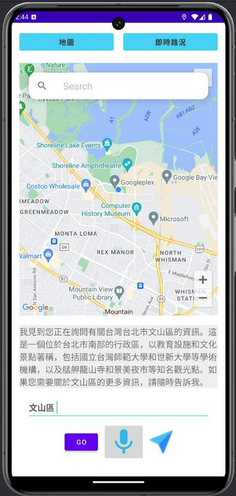
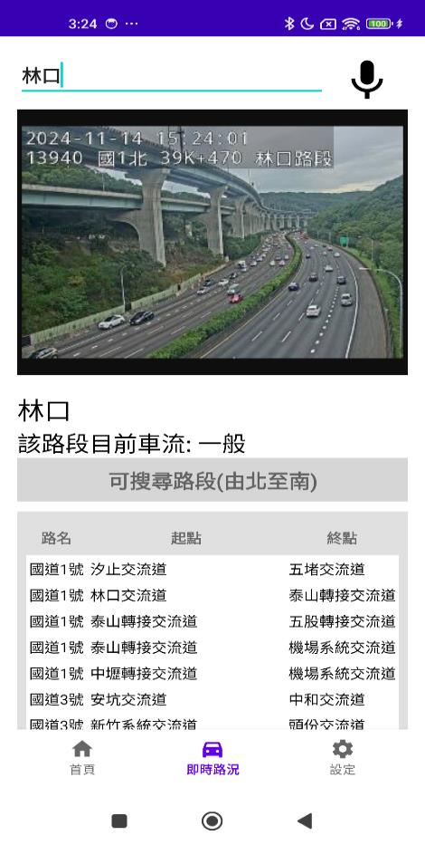
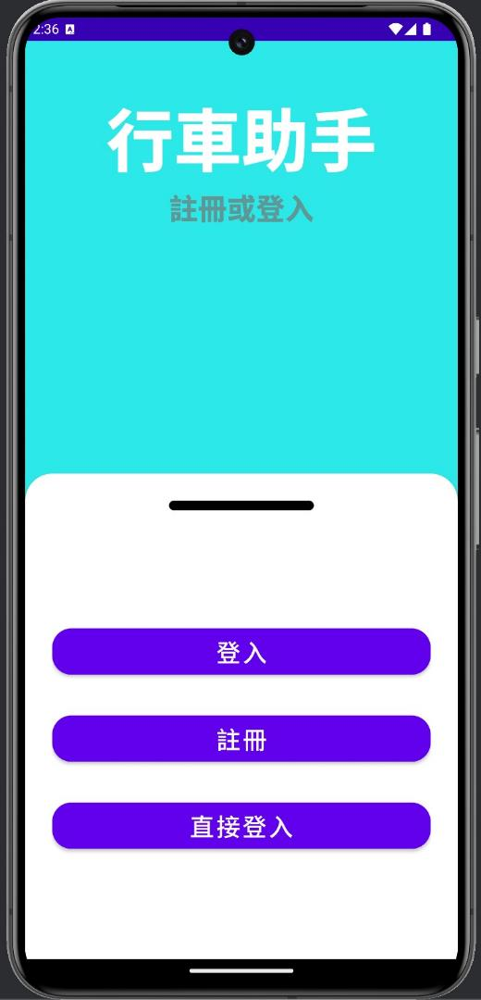

Useful information lived in too many places.
Every app switch added friction while attention should stay on the road.
AI × WEB × PRODUCT
I design the logic and build with AI, web, and APIs.
See the work
01 / PORTFOLIO
01 — ABOUT
AI helps me understand the problem. I remain responsible for the logic, structure, and decisions.
02 — SELECTED WORK
Two projects, each shaped by a real problem.
PROJECT 01 — AI DRIVING ASSISTANT
A five-person capstone that brought navigation, parking, traffic data, voice, and AI into one experience.
Every app switch added friction while attention should stay on the road.
Navigation, parking, traffic, vehicle location, GPT, and voice shared one context.
The driver could stay inside one experience instead of opening another app.
A voice request became a structured query for government open data.
TDX data and camera imagery made road conditions easier to understand.
GPT, speech-to-text, and text-to-speech became an interface layer.
The experiment reached roughly 70–80%, with weaker middle classes.
4 APPS
1 DRIVER

NAVIGATION“Find parking nearby.”

TRAFFIC / TDX
GPT / STT / TTSEXPERIMENT RANGE
≈ 70–80%
ProblemSCROLL STORY
The full case study covers my role, API flow, model limits, and what I would build next.
Open the full case study↗PROJECT 02 — REAL CLIENT
My first website for a real business — built to make a food-machinery brand and its products easier to discover.
RESEARCH / IA / UI / FRONTEND / RWD
專業食品加工設備


Technology supported a real company need; it was never the story by itself.
03 — CONTACT
Interested in AI applications, web products, and work that begins with a real user problem.